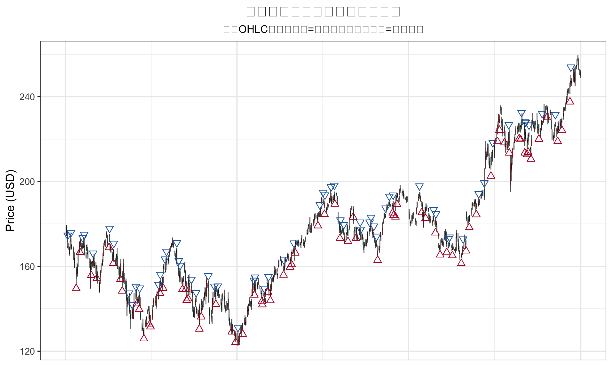
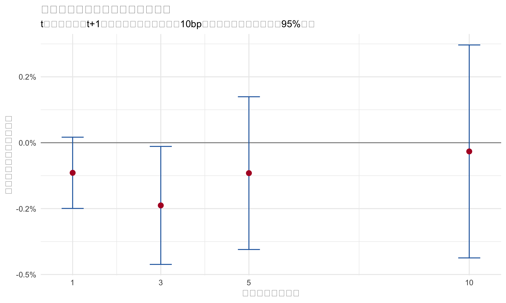

形态字典与统一扫描
问题现场
完成若干形态后，最常见的工程问题不再是“不会检测”，而是输出列、方向、周期和参数不统一。某些函数返回一列，某些返回看涨/看跌两列；有的形态中性，有的名称虽含“上涨”却是看跌警报。没有字典和测试，批量扫描很容易静默出错。
学习目标
- 建立形态函数、输出列、周期和方向的机器可读字典；
- 统一R/Python不同列名；
- 批量扫描时保留原始布尔列和归一化方向列；
- 计算事件频率、重叠率和方向冲突；
- 为后续组合评分建立稳定输入。
经典形态与市场机制
形态可按所需K线数量分为单根、双根、三根、四根、五根和参数化N根；也可按看涨、看跌、中性和双向分类。分类不是证据等级。长周期形态通常更稀有，单根形态通常更依赖上下文；中性形态必须另加方向规则。
经典形态名称有助于沟通，但机器处理需要四个更基本的字段：function、signal_column、bars、direction。再加上参数和包版本，才构成可复现标签。
可计算定义
设第 \(j\) 个形态的方向为 \(s_{j,t}\in\{-1,0,1\}\)，命中指示为 \(I_{j,t}=I(s_{j,t}\ne0)\)。频率为 \(N_j/T\)，两形态重叠率可用Jaccard系数：
\[ J_{jk}=\frac{\sum_t I_{j,t}I_{k,t}} {\sum_t I(I_{j,t}+I_{k,t}>0)}. \]
方向冲突率是在两者同日命中时 \(s_{j,t}s_{k,t}<0\) 的比例。汇总信号先对方向求和再取符号；原始命中数与净方向必须分别保存。
研究设计
本章扫描锤子、流星、吞没、星线、孕线和三法六组形态，比较事件频率和组合结果。主实验只要净分数非零就产生信号。稳健性一：每组形态等权，而不是每个输出列等权；稳健性二：保留非重叠事件；稳健性三：将2018年作为时间切分点检查频率漂移。
R实现
ohlc <- lab_xts()
detectors <- list(
hammer = eCandleSticks::add_csp_hammer,
shooting = eCandleSticks::add_csp_shooting_star,
engulfing = eCandleSticks::add_csp_engulfing,
star = eCandleSticks::add_csp_star,
harami = eCandleSticks::add_csp_harami,
methods = eCandleSticks::add_csp_three_methods
)
raw_results <- lapply(detectors, function(f) f(ohlc))
directional <- lab_base_signals()
signal_r <- sign(Reduce(`+`, directional[c(
"hammer", "shooting", "engulfing", "star", "harami", "methods"
)]))R端没有把所有输出强制拼成一个不可解释的宽表；保留分组列表更容易跟踪参数、列名和周期。
Python实现
from ecandlesticks import scan_all
from python.candlestick_lab import load_data, to_ohlcv
ohlcv = to_ohlcv(load_data())
all_patterns = scan_all(ohlcv)
assert all_patterns.index.equals(ohlcv.index)
assert all(dtype == bool for dtype in all_patterns.dtypes)
# 研究前使用显式字典把原始列映射到 -1/0/1，
# 不依赖列名中是否包含 Bull/Bear 的猜测。scan_all() 适合数据审计和候选发现，正式研究仍应显式列出使用的形态，避免包升级后新增列改变历史结果。
图形诊断

图上若几乎每天都有标记，说明字典过宽或中性形态被错误赋向。若标记只集中于某一价格年代，检查复权、报价精度和包版本。
证据与稳健性
| sample | events | mean_gross | mean_net | win_rate | ci_low | ci_high |
|---|---|---|---|---|---|---|
| 全部事件 | 699 | -2e-04 | -0.0012 | 0.4878 | -0.0041 | 0.0017 |
| 非重叠事件 | 365 | -8e-04 | -0.0018 | 0.4877 | -0.0059 | 0.0023 |

组合样本量增加，但平均效应可能向零收缩，因为不同形态表达的机制并不相同。稳健性检查应报告每个子形态的贡献、重叠矩阵和包版本。若升级包后事件数改变，先定位定义差异，再决定是否重跑历史结果。
AI协作实验室
AI从R NAMESPACE、Python __init__.py 和函数文档生成对照字典；约束是每项必须有源码位置和测试事件。验收脚本检查函数可导入、输出行数等于行情行数、布尔列无未来日期、方向值域合法。字典生成属于工程辅助，不代表AI判断形态有效。
失效条件与常见误区
- 用列名字符串猜测方向而不维护显式字典；
scan_all()升级后新增形态却没有版本锁定；- 把输出列数当成独立假设数；
- 忽略中性形态的条件方向来源；
- 组合结果改善后不报告各子形态失败结果。
本章小结与练习
统一扫描的核心产物不是“更多信号”，而是一份可审计字典和稳定的方向映射。它为下一章研究形态汇聚、冲突与概率评分提供输入。
- 生成六组形态的事件数和两两Jaccard矩阵。
- 比较“每组等权”和“每个输出列等权”的差异。
- 模拟包新增一列后，写测试确保正式研究结果不会静默变化。
进入下一章前，请确认你能追踪每个方向值来自哪个函数和输出列，并能区分命中数、净方向与独立假设数。